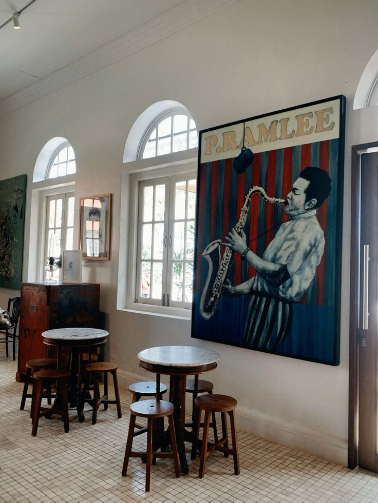

About the P. Ramlee Film Gallery
This digital gallery celebrates the cinematic legacy of Tan Sri P. Ramlee — showcasing his legendary posters, classic scenes, and behind-the-scenes moments from the golden era of Malay films.

Why This Gallery Matters
More than just a collection of movie posters, this gallery is a tribute to the brilliance and artistry of one man who changed the face of Malaysian cinema. Each poster tells a story of culture, humour, struggle, and identity.
🎬 30+ Classic Posters
Each piece represents a cinematic milestone in P. Ramlee’s career.
Rare Posters
- Seniman Bujang Lapok (1959)
- Ibu Mertuaku (1962)
- Ali Baba Bujang Lapok (1961)
📸 Behind-the-Scenes
Step into the life on set — candid moments, costumes, and more.
Production Memories
Rare photos from the archives showing actors, crew and life during filming.
🖼️ Artistic Legacy
Preserving the artistry of film posters — from hand-painted to digital.
Poster Design Styles
- Classic Brushwork
- 1960s Pop Influence
- Modern Digital Retouch